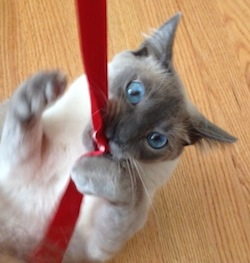

This is a personal website dedicated to things my cats have destroyed, or to put it more dramatically: To mourn the CATastrophes committed by two little monsters, Felix and Feynman the Cats. Completed September 2014.
 Once upon a time, I looked around my apartment and realized, wow. My cats are special. (They say they're "artistic.") So I started taking pictures of some, er, fantastically disfigured household items, I mean artwork. I sent the photos to family and friends who unanimously responded with:
LOL OMG WHAT IS WRONG WITH YOUR CATS AT LEAST TODDLERS TURN INTO ADULTS EVENTUALLY... AHHHH
At some point I started iterating on the idea of a creepy hilarious graveyard filled with destroyed inanimate objects. Because when you can't have anything nice, it's better to make a website about it than to cry yourself to sleep.
All of the images are original artwork I created via Adobe Illustrator CC. I drew inspiration from a variety of sources: Old expansive graveyards photographed in twilight, intricate marble details accentuated with city dirt and grit, and the curious symbol of a skull with angel wings carved on headstones all around Boston. I had a wonderful time listening to scary music and pouring over images of old gravestones late into the night, to the point where my husband started giving me the side-eye while gently asking, "Is everything OK? Should I be worried?"
I also had a blast creating obituary-like poems for each object. I have a background in linguistics and journalism, and creative writing is something that has always been near and dear to my heart. This project became a unique creative outlet and reminded me that I still love to write.
During the design stage, I decided that I wanted my website to have a Tim Burton-esque feel. His website is super cool, but it would probably make Steve Krug cry (author of my UX bible, Don't Make Me Think, Revisited). You have no idea what is in store for the first 10 seconds of visiting the site. Literally: The first 10 seconds features a progression of strange beings huddled around the numbers 1 through 10. After that, you're informed that this is a website about the art of Tim Burton, but to access his artwork portfolio you have to navigate this "Stain boy" character with the arrows on your keyboard while odd music plays. This is charming and works because it's a website about Tim Burton, the master of strange.
I knew that I wouldn't be able to get away with half as much, but I still wanted to incorporate some element of mystery and discovery. This meant breaking some rules (but hopefully not Mr. Krug's heart):
Because the purpose of the website was to showcase artistic content vs. informational content, I felt like had more freedom to take risks in user experience.
I developed the website using Bootstrap and SCSS. This was the first time making my CSS code "Sassy," and by the end I was sold on its benefits and power. Here are some things I learned on this project:
Additionally, this was also the first project that I deliberately tried to make look less like a typical Bootstrap website. This was a motivating challenge and ultimately helped me improve my coding skills. The end result is that I was able to produce something closer to my visual goals, but the downside was that I lost some of the responsive features of Bootstrap. So, my website looks pretty good on my 13-inch laptop, but not so great on a mobile device or a big fancy iMac with Retina 5K display.
As more time passes, the more critical I become of the end product. I'm not sold on the font I used for certain words in the blurb before the gravestones. And why didn't I save the top image as an SVG? At larger screens the image stops expanding. Sad. Also, some of the images take a long time to load onto the website. I definitely need to incorporate some SPRITES, especially for the gravestone images (I used an inline javascript mouseover technique in the HTML to show an identical gravestone outlined in red when the user hovers over it).
And while I initially loved the incredibly large spacing between the gravestones, I now go back and forth on whether it really works. Every time I look at my website, my internal muttering sounds something like this: Hey girl, that spacing definitely looks strange and unnecessary on larger-then-13-inch screens. But it helps the user focus on one gravestone at a time! And when the user clicks on a gravestone, a modal opens to the left or right of it! Minimalist websites can be cool! I want candy!
At some point, I would like to revisit this project and continue to improve the website. While it is easy for me to tear it apart and poke at its flaws, I am also pretty proud of the amount of creativity generated from something as mundane as cheap broken plastic blinds.